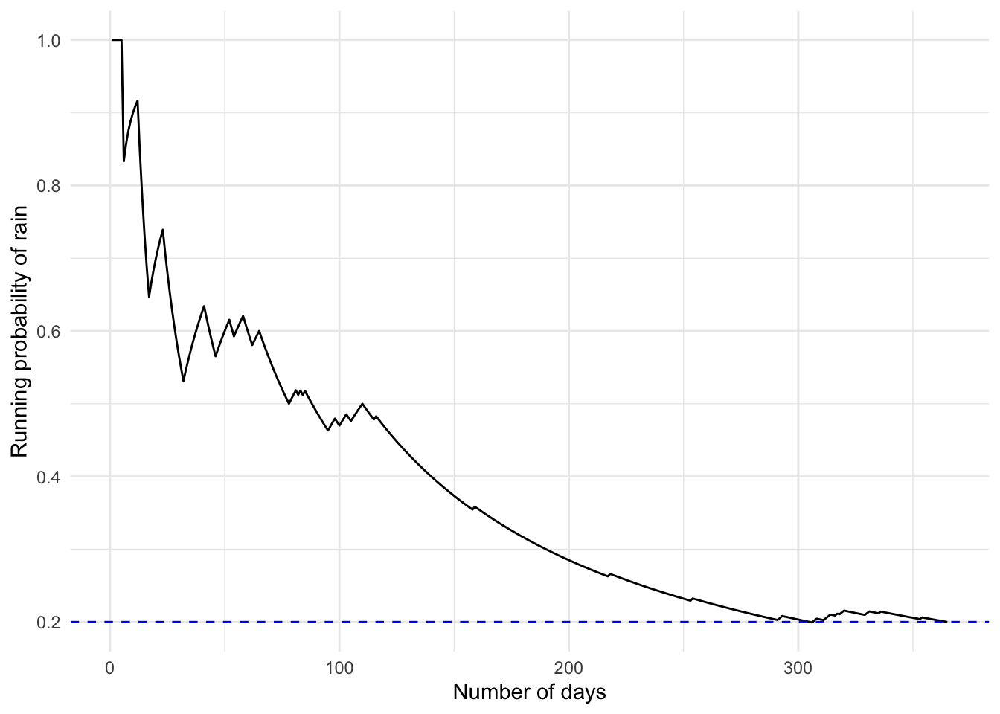
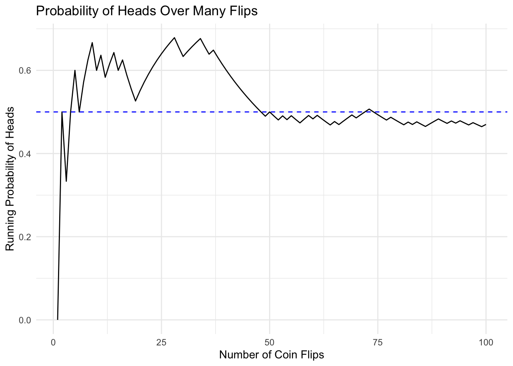
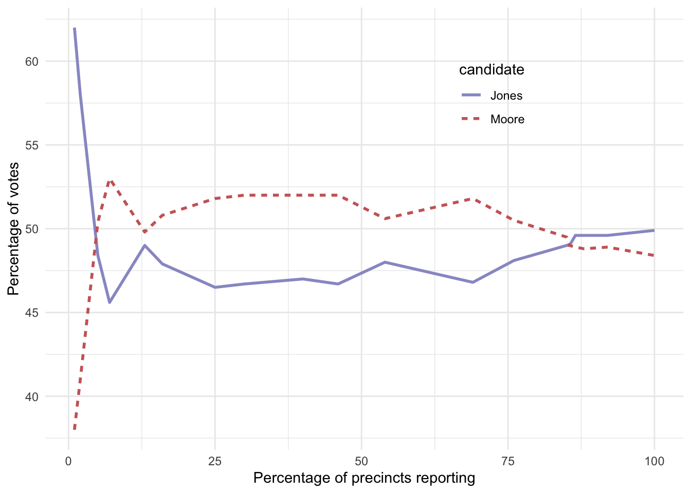
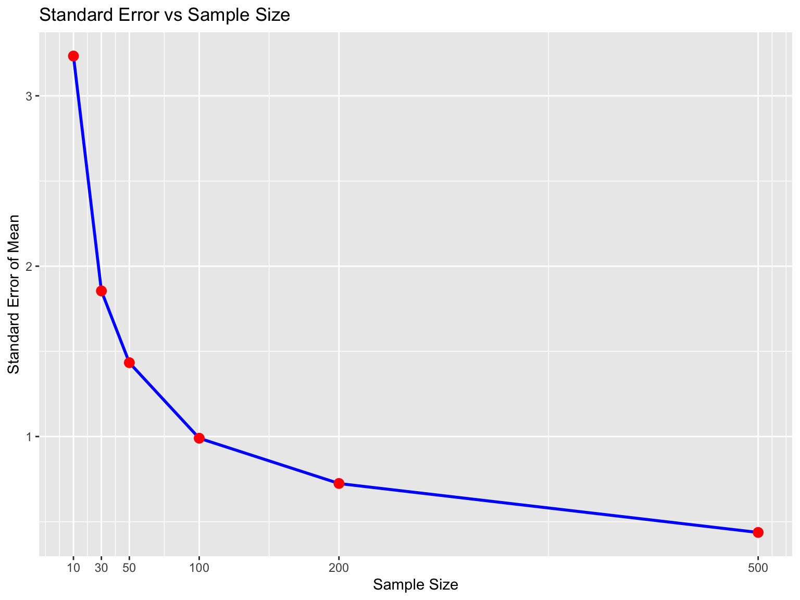
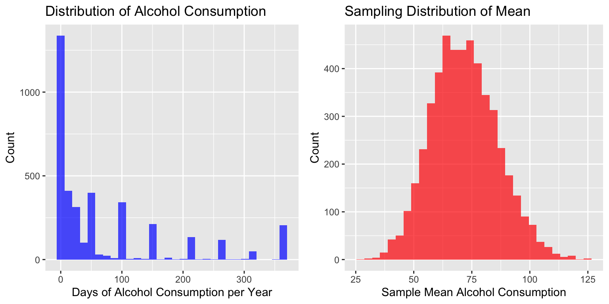

Probability, Sampling,
and Experiments
Week 3
Dr Andrew Mitchell ![]()
Lecturer in AI and Machine Learning for Sustainable Construction
2025-01-30
Continuous Module Dialogue
If you haven’t yet, please complete the CMD survey on Menti:
Part 1: Introduction to Probability
What is Probability Theory?
- Branch of mathematics dealing with chance and uncertainty
- Foundation for statistics
- Provides tools to describe uncertain events
- Historical origins in games of chance
- Deep questions about meaning and interpretation
Experiment, Sample Space, Events
- An experiment is any activity that produces or observes an outcome. Examples are flipping a coin, rolling a 6-sided die, or trying a new route to work to see if it’s faster than the old route.
- Coin flip: {heads, tails}
- Die roll: {1,2,3,4,5,6}
- Travel time: (0,∞)
- The sample space is the set of possible outcomes for an experiment. We represent these by listing them within a set of squiggly brackets.
- An event is a subset of the sample space. In principle it could be one or more of possible outcomes in the sample space, but here we will focus primarily on elementary events which consist of exactly one possible outcome.
- Subset of sample space
- Can be elementary or compound
- Example: rolling a 4
Kolmogorov’s Axioms
For events \({E_1, E_2, ... , E_N}\) and random variable \(X\):
Non-negativity:
\(P(X=E_i) \ge 0\)
Normalization:
\(\sum_{i=1}^N{P(X=E_i)} = 1\)
Boundedness:
\(P(X=E_i)\le 1\)
Implications:
- All probabilities are between 0 and 1
- Total probability must sum to 1
- Individual probabilities ≤ 1
Probability Rules and Classical Probability
Basic Rules
Rule of Subtraction:
\(P(\neg A) = 1 - P(A)\)
Example: P(not rolling a 1) = \(1 - \frac{1}{6} = \frac{5}{6}\)
Intersection Rule (independent events):
\(P(A \cap B) = P(A) * P(B)\)
Example: P(six on both rolls) = \(\frac{1}{6} * \frac{1}{6} = \frac{1}{36}\)
Addition Rule:
\(P(A \cup B) = P(A) + P(B) - P(A \cap B)\)
Classical Probability
Key Principles:
- Equal likelihood assumption
- Based on counting outcomes
- No experiments needed
- Common in games of chance
Basic Formula:
\(P(outcome_i) = \frac{1}{\text{number of possible outcomes}}\)
Examples:
- Fair coin: P(heads) = 1/2
- Fair die: P(6) = 1/6
- Two dice: P(double-six) = 1/36
de Méré’s Problem
French gambler Chevalier de Méré played two games:
- Bet on ≥1 six in 4 die rolls
- Bet on ≥1 double-six in 24 rolls of two dice
He thought both had probability \(\frac{2}{3}\) but…
- Won money on first bet
- Lost money on second bet
His reasoning:
For first bet:
\(4 * \frac{1}{6} = \frac{2}{3}\)
For second bet:
\(24 * \frac{1}{36} = \frac{2}{3}\)
Visualizing Multiple Events
Matrix of Outcomes:
Key Points:
- Red cells: six on either throw
- Total red cells: 11
- Explains \(\frac{11}{36}\) probability
- Shows de Méré’s error
Pascal’s Solution
First bet:
\(P(\text{no sixes}) = \bigg(\frac{5}{6}\bigg)^4=0.482\)
\(P(\text{≥1 six}) = 1 - 0.482 = 0.517\)
Second bet:
\(P(\text{no double six}) = \bigg(\frac{35}{36}\bigg)^{24}=0.509\)
\(P(\text{≥1 double six}) = 1 - 0.509 = 0.491\)
Key Insights:
- Easier to compute complement
- First bet: P > 0.5
- Second bet: P < 0.5
- Explains gambling results
Determining Probabilities
Three Approaches
- Personal Belief
- Subjective assessment
- Based on knowledge/experience
- Limited scientific validity
- Often only available approach
- Empirical Frequency
- Based on repeated experiments
- Law of large numbers
- Real-world data collection
- Classical Probability
- Based on equally likely outcomes
- Mathematical approach
- Common in games of chance
- No experiments needed
Personal Belief
Example Question:
What was the probability that Bernie Sanders would have won the 2016 presidential election if he had been the democratic nominee?
Key Points:
- Can’t run this experiment
- People can still estimate based on knowledge
- Not scientifically satisfying
- Often the only available approach
Other Examples:
- Weather forecasts
- Sports predictions
- Economic forecasts
- Personal decisions
Empirical Frequency
San Francisco Rain Example:
- Total days in 2017: 365
- Rainy days: 73
- P(rain in SF) = 73/365 = 0.2
Key Steps:
- Define experiment clearly
- Count occurrences
- Divide by total trials

Law of Large Numbers
Coin Flip Example:
- True probability of heads = 0.5
- Small samples vary widely
- More flips = better estimate
- Converges to true probability
- “Law of small numbers” fallacy

Real-World Example: Alabama Election
2017 Senate Race:
- Roy Moore vs Doug Jones
- Early results volatile
- Final outcome different
- Small sample warning

Conditional Probability and Independence
What is Conditional Probability?
Definition:
- Probability of A given B occurred
- Written as \(P(A|B)\)
- Updates probability based on new information
Formula:
\(P(A|B) = \frac{P(A \cap B)}{P(B)}\)

NHANES Example: Physical Activity
Question:
What is P(diabetes|inactive)?
| total | inactive | diabetes | diabetes_given_inactive |
|---|---|---|---|
| 5443 | 0.454 | 0.101 | 0.141 |
Joint Probabilities:
| Diabetes | PhysActive | n | prob |
|---|---|---|---|
| No | No | 2123 | 0.3900423 |
| No | Yes | 2770 | 0.5089105 |
| Yes | No | 349 | 0.0641191 |
| Yes | Yes | 201 | 0.0369282 |
Independence
Statistical Independence:
\(P(A|B) = P(A)\)
Key Points:
- B tells us nothing about A
- Different from everyday usage
- Must check with data
Example: Jefferson State
- P(Jeffersonian) = 0.014
- P(Californian) = 0.986
- Not independent!
- Mutually exclusive
Mental Health and Physical Activity
Question: Are physical and mental health independent?
Variables:
- PhysActive: physically active?
- DaysMentHlthBad: bad mental health days
- Threshold: >7 days = bad mental health
| PhysActive | Bad Mental Health | Good Mental Health | Total |
|---|---|---|---|
| No | 629 | 2510 | 3139 |
| Yes | 471 | 3095 | 3566 |
| Total | 1100 | 5605 | 6705 |
Bayes’ Rule and Learning from Data
The Basic Formula
When we know \(P(A|B)\) but want \(P(B|A)\):
\(P(B|A) = \frac{P(A|B)*P(B)}{P(A)}\)
Alternative Form:
\(P(B|A) = \frac{P(A|B)*P(B)}{P(A|B)*P(B) + P(A|\neg B)*P(\neg B)}\)
Components:
- Prior: \(P(B)\)
- Likelihood: \(P(A|B)\)
- Marginal likelihood: \(P(A)\)
- Posterior: \(P(B|A)\)
Putting Bayes into Practice
Construction company drug testing
A major construction company conducts mandatory random drug and alcohol screening using rapid saliva tests. Consider the following scenario:
- In the UK construction industry during 2023, the prevalence of substance use affecting workplace safety was estimated at 2.5% of the workforce
- The rapid saliva test used has a sensitivity (true positive rate) of 85% when conducted according to protocol
- The specificity (true negative rate) of these tests is 99.2%
Putting Bayes into Practice
Construction company drug testing
Let’s consider a specific example. Suppose that a worker is selected for a random drug screening. The test result is positive. What is the probability that this worker is actually positive for substances?
Context: The company’s current policy is immediate suspension without pay following a positive test result, pending a more accurate laboratory confirmation test that takes 48 hours.
- Mandatory screening
- Rapid saliva test
- Safety-critical roles
- Immediate consequences
Putting Bayes into Practice
Construction company drug testing
Construction Site Testing:
- Sensitivity: P(positive|substance) = 0.85
- Specificity: P(negative|no substance) = 0.992
- Base rate: P(substance) = 0.025
Key Values:
- P(S) = 0.025 (prevalence)
- P(P|S) = 0.85 (sensitivity)
- P(P|not S) = 0.008 (1 - specificity)
Let’s Work Through It
Using Bayes’ Theorem, calculate the probability that this worker is actually positive for substances given their positive test result.
- P(S) = 0.025 (prevalence)
- P(P|S) = 0.85 (sensitivity)
- P(P|not S) = 0.008 (1 - specificity)
Solution
Calculate P(substance|positive):
\[\begin{align*} P(P) &= P(P|S) \times P(S) + P(P|not S) \times P(not S) \\ &= (0.85 \times 0.025) + (0.008 \times 0.975) \\ &= 0.02125 + 0.0078 \\ &= 0.02905 \end{align*}\]
\[\begin{align*} P(S|P) &= \frac{P(P|S) \times P(S)}{P(P)} \\ &= \frac{0.85 \times 0.025}{0.02905} \\ &= 0.7314974 \text{ or } 73.1\% \end{align*}\]
Interpretation:
- ~73.1% chance true positive
- ~26.9% chance false positive
- Much higher than 2.5% base rate
- Still significant uncertainty
Discussion: The Real-world Implications
The company’s current policy is immediate suspension without pay following a positive test result.
What do these results mean for this business policy? Is it fair to immediately suspend workers without pay for a positive test result?
Learning from Data
Bayes’ Rule as Learning:
\(P(B|A) = \frac{P(A|B)}{P(A)}*P(B)\)
Components:
- Prior belief: \(P(B)\)
- Evidence strength: \(\frac{P(A|B)}{P(A)}\)
- Updated belief: \(P(B|A)\)
Key Insights:
- Updates prior knowledge
- Evidence can strengthen/weaken
- Systematic way to learn
- Combines knowledge & data
Odds and Odds Ratios
Converting to Odds:
\(\text{odds of A} = \frac{P(A)}{P(\neg A)}\)
Example:
Drug test odds:
- Prior: \(\frac{0.025}{0.975} = 0.026\)
- Posterior: \(\frac{0.7314974}{0.2685026} = 2.724\)
Odds Ratio:
\(\frac{\text{posterior odds}}{\text{prior odds}} = \frac{2.724}{0.026} = 106.25\)
Interpretation:
- Odds increased 105×
- Much stronger evidence
- Shows test’s power
- Despite false positives
Probability Distributions
What is a Probability Distribution?
Definition:
- Describes all possible outcomes
- Assigns probability to each
- Different types for different data
- Mathematical formulation
Examples:
- Binomial (success/failure)
- Normal (continuous)
- Poisson (counts)
Code
# Create example distributions
x <- seq(-4, 4, length.out = 100)
normal_df <- data.frame(
x = x,
y = dnorm(x),
type = "Normal"
)
x <- 0:10
poisson_df <- data.frame(
x = x,
y = dpois(x, lambda = 3),
type = "Poisson"
)
colors <- c(
"Normal" = "blue",
"Poisson" = "red"
)
# Plot distributions
ggplot() +
geom_line(data = normal_df, aes(x = x, y = y, color = "Normal"), size = 1) +
geom_point(
data = poisson_df,
aes(x = x, y = y, color = "Poisson"),
size = 1.5
) +
labs(
title = "Example Distributions",
x = "Value",
y = "Probability",
color = "Legend"
) +
theme(legend.position = "top") +
scale_color_manual(values = colors) +
theme_minimal()
The Binomial Distribution
Properties:
- Independent trials
- Two outcomes
- Fixed probability
- Order doesn’t matter
Formula:
\(P(k; n,p) = \binom{n}{k} p^k(1-p)^{n-k}\)
Where:
- k = successes
- n = trials
- p = probability per trial
Binomial Coefficient:
\(\binom{n}{k} = \frac{n!}{k!(n-k)!}\)
Example: Steph Curry’s Free Throws
Scenario:
- Steph Curry hits 91% of his free throws
- In a game in Jan, 2018, he hit only 2 out of 4 free throws
- It seems pretty unlikely that he would hit only 50% of his free throws in a game, but exactly how unlikely is it?
Calculation:
\(P(2;4,0.91) = \binom{4}{2} 0.91^2(1-0.91)^{2}\)
\(= 6 * 0.8281 * 0.0081\)
\(= 0.040\)
Interpretation:
- Very unlikely (4%)
- Yet it happened
- Rare events do occur
- Don’t overinterpret
Cumulative Distributions
Often we want to know not just how likely a specific value is, but how likely it is to find a value that is as extreme or more than a particular value?
Definition:
- Probability of value ≤ x
- Accumulates probabilities
- Often more useful
- Important for testing
Example:
\(P(k\le2)= P(k=2) + P(k=1) + P(k=0)\)
Cumulative Distributions
Code
# curry_df <- tibble(
# numSuccesses = seq(0, 4)
# ) %>%
# mutate(
# Probability = dbinom(numSuccesses, size = 4, prob = 0.91),
# CumulativeProbability = pbinom(numSuccesses, size = 4, prob = 0.91)
# )
# Create data for Curry's free throw distributions
n_throws <- 4
curry_prob <- 0.91
x <- 0:n_throws
curry_dist_df <- data.frame(
x = x,
Simple = dbinom(x, size = n_throws, prob = curry_prob),
Cumulative = pbinom(x, size = n_throws, prob = curry_prob)
)
kable(
curry_dist_df,
caption = "Simple and cumulative probability distributions",
digits = 3
)| x | Simple | Cumulative |
|---|---|---|
| 0 | 0.000 | 0.000 |
| 1 | 0.003 | 0.003 |
| 2 | 0.040 | 0.043 |
| 3 | 0.271 | 0.314 |
| 4 | 0.686 | 1.000 |

Summary
Core Concepts:
- Probability measures uncertainty
- Three approaches:
- Personal belief
- Empirical frequency
- Classical probability
- Fundamental rules:
- Addition
- Multiplication
- Subtraction
Advanced Topics:
- Conditional probability
- Independence
- Bayes’ rule
- Probability distributions
Applications:
- Medical screening
- Data analysis
- Decision making
- Statistical inference
Part 2: Statistical Sampling
Making inferences about populations from samples
Why Study Sampling?
The Power of Sampling:
Nate Silver’s 2012 Election Prediction:
- Correctly predicted all 50 states
- Used only 21,000 people
- To predict 125 million votes
- Combined data from 21 polls
Key Insights:
- Small samples can be powerful
- Proper methodology is crucial
- Combining data improves accuracy
- Statistical rigor matters
Sampling Fundamentals
- Population vs Sample:
- Population: Entire group of interest
- Sample: Subset used for measurement
- Goal: Infer population parameters from sample statistics
- Representative Sampling:
- Equal chance of selection
- Avoid systematic bias
- Random selection crucial
- Types of Sampling:
- With replacement: Items can be selected multiple times
- Without replacement: Items selected only once
- Choice affects probability calculations
- Key Terms:
- Parameter: Population value (usually unknown)
- Statistic: Sample value (our estimate)
- Sampling Error: Difference between statistic and parameter
Sampling Error & Distribution
Concept
What is Sampling Error?
- Difference between sample and population
- Varies across samples
- Affects measurement quality
- Can be quantified
Sampling Error & Distribution
Concept
Standard Error of the Mean
Definition:
\(SEM = \frac{\hat{\sigma}}{\sqrt{n}}\)
Where:
- \(\hat{\sigma}\) is estimated standard deviation
- \(n\) is sample size
Key Properties:
- Measures sampling distribution variability
- Decreases with larger samples
- Increases with population variability
Sample Size Effects
Impact of Sample Size:
- Larger n → Smaller SEM
- Relationship is not linear
- Diminishing returns
- Square root relationship

The Central Limit Theorem
Key Points:
- As sample size increases:
- Sampling distribution becomes normal
- Regardless of population distribution
- Mean approaches population mean
- Variance decreases
- Implications:
- Enables statistical inference
- Justifies normal approximation
- Explains real-world patterns
The Central Limit Theorem tells us that as sample sizes get larger, the sampling distribution of the mean will become normally distributed, even if the data within each sample are not normally distributed. This is a powerful result that allows us to make inferences about population parameters based on sample statistics.
The Central Limit Theorem
Normal Distribution:
- Bell-shaped curve
- Defined by mean (\(\mu\)) and SD (\(\sigma\))
- Symmetric around mean

CLT in Action: NHANES Example

- Original data is highly skewed
- Sampling distribution is nearly normal
- CLT works even with:
- Non-normal data
- Skewed distributions
- Discrete values
- Sample size of 50 is sufficient
Summary
- Sampling Fundamentals:
- Population vs Sample
- Representative sampling
- With/without replacement
- Sampling error
- Standard Error:
- Measures sampling variability
- Decreases with √n
- Guides sample size decisions
- Quantifies precision
- Central Limit Theorem:
- Sampling distribution normality
- Independent of original distribution
- Enables statistical inference
- Foundation for hypothesis testing
- Applications:
- Political polling
- Clinical trials
- Quality control
- Research design
Questions or Discussions
See you next week!
Suggested Readings
- A Student’s Guide to Bayesian Statistics by Ben Lambert
- The Drunkard’s Walk: How Randomness Rules Our Lives by Leonard Mlodinow
- Ten Great Ideas about Chance by Persi Diaconis and Brian Skyrms
BSSC0021 - Week 3